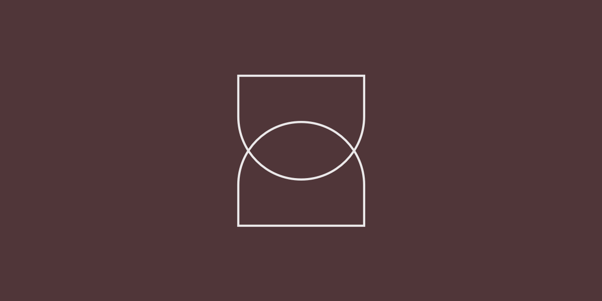
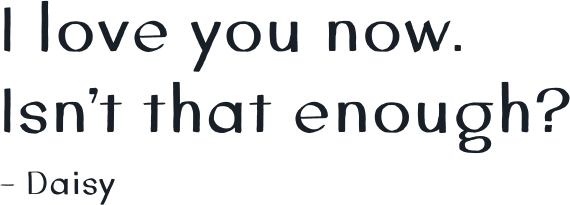

Introduction
With a cool and confident atmosphere, The Daisy is an Agave Gastropub located in the Upper East Side of New York City featuring craft cocktails derived from Agave spirits paired with a eclectic food menu. Working in partnership with Gourmet Marketing, the goal of this project was to design a feminine, vintage-classic looking website that would translate into all of the different touchpoints of a Gastropub that brings exceptional features and an exclusive mix of American and Mexican cuisine.
My role
I worked as a freelancer in partnership with Gourmet Marketing on the design and definition of the visual language of The Daisy’s new responsive website. As part of the deliverables, I drew wireframes and designed the views of all pages and states of the web site for desktop and mobile devices.
Tools and technologies
Pen & paper, Sketch, InVision.

Starting with sketches
I like to have a rough idea of what I am going to design before jumping to Sketch/Photoshop and, as usual, working on paper allowed me to work through ideas quickly. I spent some type sketching a bunch of different grids and layouts for the responsive views of the pages and tossed out the ideas that didn’t seem optimal until define the base site structure.

High fidelity mockups and designing the interface
After the main features were worked out on paper, I made high fidelity mockups. I already had in mind what the aesthetichs of the site would look like, and I used those mockups as the final resource when I moved on to styling the pages - working on top of the mockups makes the process much faster to me.
The user experience focuses on the most important tasks such as exploring the menu items using delightful photography, specials, finding the venue location, making a reservation, then visiting the gastropub for a drink. With a consistent UI that helps build trust and familiarity, the site keeps its fluidity and function through the interior pages. The website is based on an x-column grid, which brings order and freedom to present information adapted to every type of screen regardless the user’s device.
One of the main inspirations to design the website’s inferface was the simplicity of The Daisy’s logo. The mark is an abstraction made up of two capital D shapes arranged symmetrically and turned on their side. A femnine touch is implied and the shapes remind one of a drinking glass, but not specific enough to limit the brand. The branding was developed by Common Space Studio.



Because I wasn’t working right next to the developer on this project, I had to design and catalog the documentation regarding how the pages should behave on multiple resolutions, define transitions etc. so that the design could be implemented as envisioned. The Symbols feature in Sketch to reuse elements across artboards and designs is really handy for both parties to make the delivered file organized and intuitive. I generally use it as much as I can. With the final screens ready, I then used InVision to share the designs and get feedback from account managers, developers and client.
The final result is a simple yet flexible website that proclaims utility and minimalist aesthetics in favor of information.